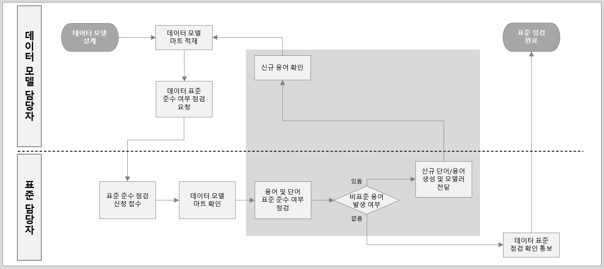

Data Governance Study - Data Glossary Review Process
데이터 표준 관리: 데이터 모델 표준 용어 점검 절차
Data Governance
이 블로그 포스트에서는 데이터 표준 용어 사전의 개념, 목적, 구성 요소 및 제작 과정을 설명한다. 표준 용어의 기본 원칙, 구성 원칙, 활용 원칙을 다룬다.
1 Data Standard Governance > Data Glossary Review Process
데이터 모델 수정 발생시 표준담당자가 표준 점검 후 신규 용어를 데이터 모델 담당자에게 전달하고 모델에 반영한다.
1.0.1 데이터 모델 표준 용어 점검 절차
- 데이터 모델 수정 발생시 표준담당자가 표준 점검 후 신규 용어를 데이터 모델 담당자에게 전달하고 모델에 반영한다.
- 표준담당자가 회사 표준담당자가 아닐 경우 표준단어/표준용어에 등록 시 회사 담당자 확인이 필요함
- 메타시스템 도입 전까지 회사 표준 담당자가 엑셀로 관리함

- 데이터 모델의 표준 용어 점검 절차를 TASK 별 상세 설명
- 모델 담당자와 표준 담당자 간의 명확한 역할 구분
- 단계별 검토 및 피드백 프로세스
- 비표준 용어 발견 시 신규 용어 생성 및 확인 절차
- 최종적으로 모델에 표준 용어 반영
순번 TASK 설명 담당 비고 1 데이터 모델 마트 적재 데이터 모델 담당자는 설계한 데이터 모델을 회사 데이터 마트에 적재하여 공유함 모델담당 2 데이터 표준 준수 여부 점검 요청 신규 또는 변경된 데이터 모델에 대하여 표준 담당자에게 표준 준수 여부 점검을 요청함 모델담당 3 표준 준수 점검 신청 접수 표준 담당자는 데이터 모델 담당자의 데이터 모델 표준 준수 여부 요청을 접수함 표준담당 4 데이터 모델 마트 접속 데이터 모델 마트에 접속하여 모델의 속성명 정보를 내려받아 점검 대상을 추출함 표준담당 5 용어 및 단어 표준 준수 여부 점검 점검 대상을 표준 단어 및 용어 기준으로 표준 준수 여부를 점검함 표준담당 6 비표준 용어 발생 여부 확인 추출한 데이터 모델의 용어 중 비표준 용어 발생 여부를 확인함 표준담당 7 신규 단어/용어 생성 및 모델 담당자 전달 비표준 용어에 대한 용어 및 단어 생성 후 모델러에게 전달 표준담당 EXCEL 8 신규 용어 확인 표준 담당자에게 전달받은 신규 용어가 적정한지 확인 모델담당 9 데이터 표준 점검 확인 통보 데이터 모델에 비표준 용어가 없을 경우 점검 확인을 데이터 모델 담당자에게 통보함 표준담당 10 표준 점검 완료 데이터 모델 담당자는 신규 용어를 데이터 모델에 반영함 모델담당